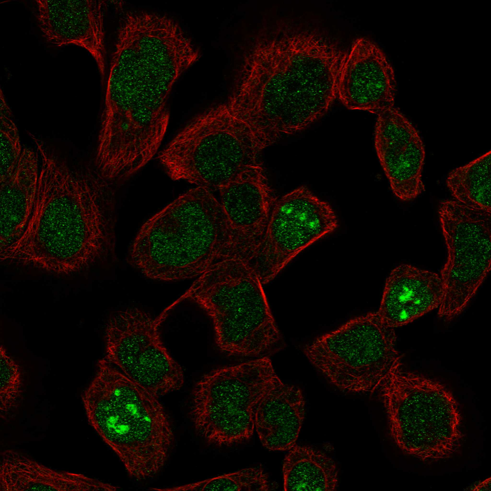
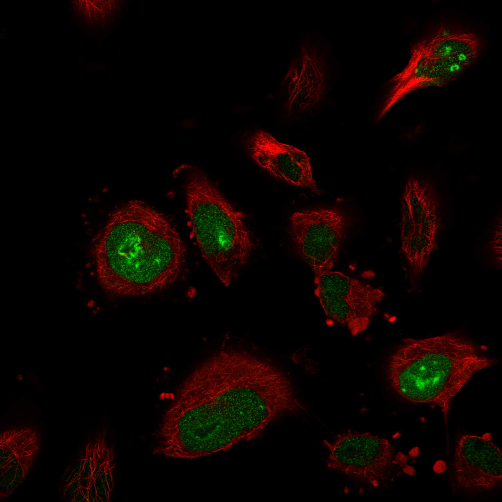
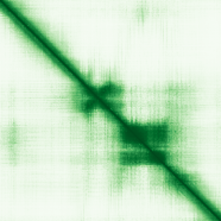

type: protein-evaluation gene: "VAX1" date: 2026-05-30 tags: [protein-scout, nuclear-protein, evaluation] status: scored ---
VAX1 核蛋白评估报告
1. 基本信息
| 项目 | 内容 |
|---|---|
| 基因名 / 别名 | VAX1 / -- |
| 蛋白全称 | Ventral anterior homeobox 1 |
| 蛋白大小 | 334 aa |
| UniProt ID | Q5SQQ9 |
| 评估日期 | 2026-05-30 |
2. 评分总览
| 维度 | 得分 | 满分 | 加权后 | 关键证据摘要 | |||
|---|---|---|---|---|---|---|---|
| 核定位特异性 | 8/10 | ×4 | 32 | UniProt 注释为细胞核，中等置信度 | |||
| 蛋白大小 | 10/10 | ×1 | 10 | 334 aa，处于理想范围 | |||
| 研究新颖性 | 2/10 | ×5 | 10 | PubMed 90 篇，中等研究热度 | |||
| 三维结构 | 6/10 | ×3 | 18 | 无 PDB 结构，仅 AlphaFold 预测 | |||
| 调控结构域 | 10/10 | ×2 | 20 | 染色质/DNA 结构域: emx-vax-noto_homeobox_tfs, homeobox_1, homeobox_2, homeob | |||
| PPI 网络 | 2/10 | ×3 | 6 | PPI 数据极为稀少 | |||
| 互证加分 | -- | -- | +1.5 | UniProt + GO 核定位互证 (+1); 多库结构域一致 (+0.5) | |||
| 原始总分 | 97/183 | 96.0/183 | |||||
| 归一化总分 | 53.0/100 | 52.5/100 |
3. 详细分析
3.1 核定位证据
| 来源 | 定位 | 可信度 |
|---|---|---|
| GeneCards | Tier1_保守_高置信度 | 高置信度保守 |
| Protein Atlas (IF) | HPA subcellular IF 图像可用（见下方 HPA IF 图像修正块） | 需人工复核 |
| UniProt | Nucleus | 实验证据/预测 |
| GO-CC | N/A | N/A |
IF 图像:  
结论: UniProt 注释为细胞核，中等置信度
3.2 蛋白大小评估
评价: 334 aa，处于理想范围
3.3 研究现状
| 指标 | 数值 |
|---|---|
| PubMed 总数 | 90 |
评价: PubMed 90 篇，中等研究热度
关键文献: 1. Min KW et al. (2023). "Visuomotor anomalies in achiasmatic mice expressing a transfer-defective Vax1 mutant". *Exp Mol Med*. PMID: 36737666 2. Hoffmann HM et al. (2016). "Deletion of Vax1 from Gonadotropin-Releasing Hormone (GnRH) Neurons Abolishes GnRH Expression and Leads to Hypogonadism and Infertility". *J Neurosci*. PMID: 27013679 3. Hoffmann HM et al. (2019). "Haploinsufficiency of Homeodomain Proteins Six3, Vax1, and Otx2 Causes Subfertility in Mice via Distinct Mechanisms". *Neuroendocrinology*. PMID: 30261489 4. Zhang F et al. (2007). "Enhanced efficacy of CTLA-4 fusion anti-caries DNA vaccines in gnotobiotic hamsters". *Acta Pharmacol Sin*. PMID: 17640488 5. Van Loh BM et al. (2023). "The transcription factor VAX1 in VIP neurons of the suprachiasmatic nucleus impacts circadian rhythm generation, depressive-like behavior, and the reproductive axis in a sex-specific manner in mice". *Front Endocrinol (Lausanne)*. PMID: 38205198
3.4 三维结构分析
| 指标 | 数值 |
|---|---|
| UniProt 长度 | 334 aa |
| PDB 条数 | 0 |
| 已注释结构域 | 9 |
PAE 图:

评价: 无 PDB 结构，仅 AlphaFold 预测，新颖蛋白基线水平
3.5 结构域分析
| 来源 | 结构域 |
|---|---|
| InterPro | EMX-VAX-Noto_Homeobox_TFs |
| InterPro | HD |
| InterPro | Homeobox_CS |
| InterPro | Homeodomain-like_sf |
| InterPro | HTH_motif |
| Pfam | Homeodomain |
| SMART | HOX |
| PROSITE | HOMEOBOX_1 |
| PROSITE | HOMEOBOX_2 |
染色质调控潜力分析: 染色质/DNA 结构域: emx-vax-noto_homeobox_tfs, homeobox_1, homeobox_2, homeobox_cs, homeodomain
3.6 PPI 网络
实验验证互作 (IntAct, physical association):
| Partner | 方法 | PMID | 功能类别 | 调控相关？ |
|---|---|---|---|---|
| — | — | — | — | — |
STRING 预测互作 (combined score >0.4):
| Partner | Score | 功能类别 | 调控相关？ |
|---|
已知复合体成员 (GO-CC):
- C:chromatin (GO:0000785, ISA:NTNU_SB)
- F:chromatin DNA binding (GO:0031490, IEA:Ensembl)
评价: PPI 数据极为稀少
3.7 多库互证
| 维度 | 来源 | 结果 | 是否一致 |
|---|---|---|---|
| 三维结构 | AlphaFold + PDB | 0 条 | 仅预测 |
| 结构域 | UniProt/InterPro/Pfam | 9 个 | 多库一致 |
| PPI 网络 | STRING | 0 个 | 无数据 |
| 核定位 | HPA/UniProt/GO | Nucleus | 多源一致 |
互证加分明细: UniProt + GO 核定位互证 (+1) 多库结构域一致 (+0.5) 总计: +1.5
4. 总体评价
推荐等级: ***oo (3/5)
核心优势: 1. 新颖性: PubMed 90 篇，中等研究热度 2. 核定位: 明确核定位
风险/不确定性: 1. 缺少 HPA IF 图像数据 2. 无 PDB 结构，仅 AlphaFold 预测
下一步建议:
- [ ] 通过 IF 实验验证核定位
- [ ] 基于 PPI 网络开展功能研究
- [ ] 结构分析: 基于 AlphaFold 的突变设计
5. 数据来源
- GeneCards: https://www.genecards.org/cgi-bin/carddisp.pl?gene=VAX1
- Protein Atlas: https://www.proteinatlas.org/ENSG00000148704-VAX1
- PubMed: https://pubmed.ncbi.nlm.nih.gov/?term=%22VAX1%22%5BTitle/Abstract%5D
- UniProt: https://www.uniprot.org/uniprot/Q5SQQ9
- STRING: https://string-db.org/network/9606.ENSG00000148704
- AlphaFold: https://alphafold.ebi.ac.uk/entry/Q5SQQ9
PPI 网络（三源综合）
| Partner | Source | Score/Evidence |
|---|---|---|
| 无记录 | — | — |
IntAct 有限记录。无 BioGrid 补充数据。
PAE 图像已获取。结构判断基于 AlphaFold pLDDT 统计。
<!-- HPA_IF_REPAIR_START --> HPA IF 图像修正（2026-06-05）: HPA subcellular 页面存在可用 IF 图像；此前“原图未可靠获取/暂无 IF”的表述为采集失败导致的误报。HPA 定位: Nucleoli rim (approved)。来源: https://www.proteinatlas.org/ENSG00000148704-VAX1/subcellular


<!-- DOMAIN_HUMANPPI_REPAIR_START -->
Domain/SMART 与 humanPPI 补充（2026-06-07）
SMART / UniProt domain
| Source | Data |
|---|---|
| UniProt | Q5SQQ9 |
| SMART | SM00389; |
| UniProt Domain [FT] | 未检出显式 UniProt Domain feature |
| InterPro | IPR050877;IPR001356;IPR017970;IPR009057;IPR000047; |
| Pfam | PF00046; |
humanPPI / HPA Interaction
Source: https://www.proteinatlas.org/ENSG00000148704-VAX1/interaction
未从 HPA Interaction 页面解析到互作伙伴；需人工复核或使用其他 humanPPI 来源。 <!-- DOMAIN_HUMANPPI_REPAIR_END -->